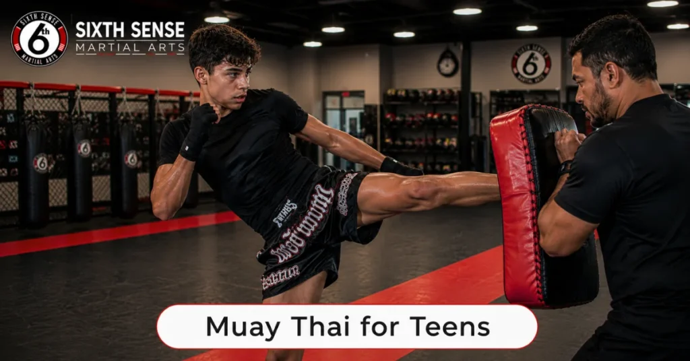
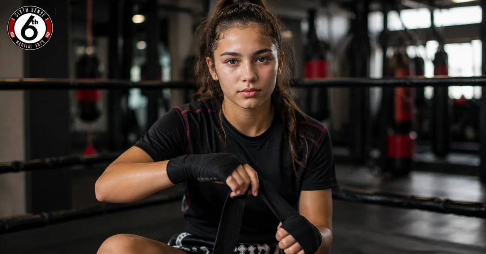
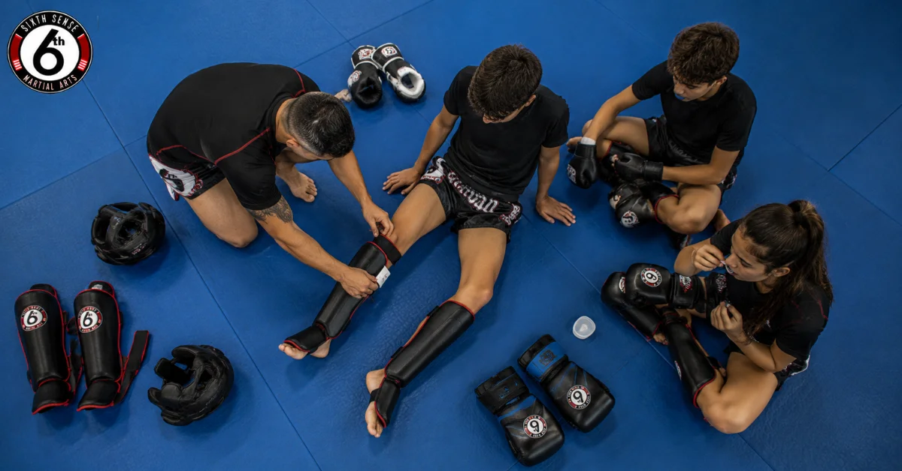

Muay Thai for Teens How It Builds Confidence Discipline and Real Strength

Why Muay Thai for Teens is More Than Just a Sport
Most parents hear the words muay thai for teens and immediately picture their kid getting hit. But the reality could not be further from that image. Muay Thai is one of the most structured and rewarding martial arts for teenagers looking to build real confidence, discipline and physical strength. At Sixth Sense Martial Arts in Coppell TX the teen Muay Thai program gives young people aged 13 to 17 something most activities simply cannot. It challenges them mentally and physically while teaching respect and self control. So if you have been considering teen kickboxing classes or martial arts for teenagers this guide will show you exactly what to expect and why it works.
Why More Parents Are Choosing Muay Thai for Teenagers
Over the past few years more parents across Coppell and the DFW area have started looking beyond traditional sports for their teens. Football, basketball and soccer are great but they do not always address what teenagers really need right now. As a result families are turning to youth combat sports like Muay Thai because it teaches more than just athletic ability. Moreover teens today face pressure from social media school stress and peer influence that did not exist a decade ago. Because of this parents want an activity that builds inner strength not just physical skills. Muay Thai delivers exactly that which is why enrollment in teen programs has grown so quickly.
What Makes Sixth Sense MMA Right for Your Teen
Not every gym is equipped to train teenagers properly. Sixth Sense Martial Arts stands out because it offers dedicated teen classes separate from both kids and adult programs. The head coach Matheus brings over 15 years of hands-on experience and understands how to work with the teenage mindset. In addition the facility is clean, modern and designed to make every student feel comfortable from day one. Furthermore the coaching staff creates a structured environment where teens are challenged but never overwhelmed. Many gyms throw teenagers into adult classes but here they get age appropriate training with peers their own age. That difference matters more than most people realize.
How Muay Thai Builds Real Confidence in Teenagers
Confidence is not something you can just tell a teenager to have. It has to be earned through experience and that is exactly what Muay Thai provides. Every class presents small challenges like learning a new combination or holding pads for a partner. As a result teens experience real wins that build genuine self belief over time. Additionally knowing they can defend themselves in a real situation gives them a quiet confidence that shows in everything they do. For instance many parents at Sixth Sense have noticed their teens standing taller making eye contact more often and speaking up in social situations. This kind of self defense for teens goes far beyond the physical. It reshapes how they see themselves.

Discipline That Carries Beyond the Gym
One of the biggest benefits of muay thai for teens is the discipline it instills naturally. Unlike school where rules feel forced the discipline in Muay Thai comes from within. Teens learn to show up on time listen to their coach warm up properly and push through tough rounds. Consequently these habits carry over into their school work their relationships and their daily routines. Moreover the structure of each class teaches them patience and consistency two things most teenagers struggle with. On top of that when teens see their own progress through consistent effort they begin to understand that discipline is not punishment. It is the path to getting what you want. That mindset shift is powerful and lasting.
Physical Strength and Conditioning Teens Actually Enjoy
Let us be honest most teenagers are not excited about running laps or doing push ups in gym class. However Muay Thai makes physical conditioning fun because every drill has a purpose. Teens throw punches, elbows, knees and kicks on pads and heavy bags which builds full body strength naturally. As a result they develop coordination, balance explosive power and cardiovascular endurance without it feeling like a boring workout. In fact many teens at Sixth Sense say training feels more like learning a skill than exercising. Similarly the conditioning aspect of teen kickboxing classes improves their performance in other sports as well. Whether they play football, soccer or basketball, the athletic foundation they build through Muay Thai gives them a noticeable edge over their peers.
Muay Thai as Self Defense for Teens
Personal safety is a real concern for teenagers and parents alike. Fortunately Muay Thai is one of the most practical martial arts for teenagers when it comes to real world self defense. Teens learn how to maintain distance read body language and use strikes effectively if they ever need to protect themselves. However the training also emphasizes when not to engage which is equally important. For instance coaches at Sixth Sense teach teens to stay calm de-escalate situations and only use their skills as a last resort. Therefore self defense for teens through Muay Thai is not about becoming aggressive. It is about having the tools and the composure to handle a dangerous situation if one ever arises. That peace of mind is priceless for both teens and their parents.
How It Helps Teens Deal with Stress and Anxiety
The teenage years come with an overwhelming amount of stress from school exams and social pressure to family changes and identity struggles. Muay Thai gives teens a healthy physical outlet for all that built up tension. When they hit pads and push through rounds their body releases endorphins which naturally reduce stress and improve mood. As a result many teens who train regularly report feeling calmer and more in control of their emotions. Furthermore the focus required during training forces them to be fully present which acts like a form of active meditation. On top of that the supportive training environment at Sixth Sense gives teens a safe space where they can let go of outside pressures. Mental health matters and youth combat sports like Muay Thai address it in a way that feels natural not clinical.
The Social Side of Teen Muay Thai Training
Teenagers need a sense of belonging and Muay Thai provides that through a tight knit training community. At Sixth Sense teens train alongside peers their own age which creates natural friendships built on shared effort and respect. In addition partner drills like pad work and controlled sparring require trust and communication which deepens those bonds quickly. Moreover this is a very different social environment compared to school where cliques and social hierarchies often dominate. In Muay Thai everyone starts as a beginner and earns respect through hard work not popularity. Consequently many teens who struggle socially at school find their people on the mat. The friendships formed through martial arts for teenagers tend to be more authentic and lasting because they are built on mutual support rather than surface level interests.
What a Typical Teen Muay Thai Class Looks Like
If your teen has never trained before it helps to know what actually happens in a class. At Sixth Sense a typical teen Muay Thai session starts with a dynamic warm up that gets the body moving and the heart rate up. Subsequently the coach introduces the technique of the day and breaks it down step by step. Teens then practice the technique on pads with a partner while the coach walks around giving personal feedback. After that the class moves into combination drills and light controlled sparring for more experienced students. Finally the session ends with a cool down and a brief group discussion. The whole class runs about an hour and the pace is challenging but never intimidating. No prior experience is needed to join and the coaches make sure every teen feels included from the very first session.
Is Muay Thai Safe for Teenagers
Safety is the number one concern for parents and rightfully so. However Muay Thai at Sixth Sense is designed with safety as a top priority. Teens wear proper protective gear including gloves shin guards and mouthguards during every session. Moreover sparring is always controlled and only introduced once a student has developed solid fundamentals. The coaches closely monitor all contact drills and step in immediately if anything gets too intense. In addition the teen classes are kept separate from adult sessions so there is no risk of a 15 year old being paired with a fully grown adult. Because of this the injury rate in teen Muay Thai is actually lower than many traditional school sports.

How Muay Thai Compares to Other Teen Activities
Parents often weigh Muay Thai against other options like team sports or gym memberships for their teenagers. Traditional sports are great but they often come with bench time politics and seasonal limitations. On the other hand teen kickboxing classes like Muay Thai offer year round training where every student gets equal attention. Additionally unlike a gym membership where teens wander between machines with no direction Muay Thai provides structured coaching and clear progression. Furthermore youth combat sports teach life skills like respect accountability and mental toughness that most other activities simply do not prioritize. Similarly the individual nature of Muay Thai means your teen is never waiting on the sideline. Every minute of every class they are actively learning growing and improving. That consistency makes a real difference over time.
When Is the Right Age to Start Muay Thai
Many parents wonder if their teenager is old enough or ready for Muay Thai. At Sixth Sense the teen program is designed for ages 13 to 17 which is an ideal window for martial arts for teenagers. At this age teens have enough body awareness and maturity to follow instructions safely and get the most out of training. However even within that range every teen develops differently and the coaches understand this. Therefore classes are structured to meet each student where they are regardless of size strength or experience level. In fact some of the most successful students at Sixth Sense started with zero athletic background. The key is simply showing up and being willing to try. If your teen is within that age range there is no reason to wait because the benefits only grow with time.
Flexible Training Schedule for Busy Teens
Between school homework extracurricular activities and social life teenagers have packed schedules. Sixth Sense MMA understands this and offers multiple class times throughout the week specifically for teens. Evening sessions work well for students who have after school commitments and weekend classes are available for those who need extra flexibility. Additionally the gym serves families from surrounding areas like Valley Ranch Irving Carrollton Grapevine and Lewisville. So no matter where you are coming from there is a class time that fits your teen’s routine. Convenience should never be the reason your teenager misses out on something that could genuinely change their life. The schedule is built around busy families because that is the reality for most households in the Coppell and DFW area.
Conclusion
Muay Thai for teens is one of the best investments a parent can make in their child’s physical and mental development. At Sixth Sense Martial Arts in Coppell TX teenagers aged 13 to 17 get access to world class coaching a safe training environment and a supportive community that treats them like family. From building real confidence and discipline to learning practical self defense for teens every class adds something meaningful to their life. So whether your teen is dealing with stress looking for a new challenge or simply needs a positive outlet Muay Thai is the answer. Take advantage of the free trial class at Sixth Sense and let your teenager experience it firsthand. The mat is waiting.
Contact Us
Have questions about our classes or training programs. We would love to hear from you. Reach out to us today and let us help you start your martial arts journey the right way.
📍 817 S MacArthur Blvd #100 Coppell TX 75019
📞 (469) 972-7800
Follow Us on Social Media
Stay connected with the Sixth Sense Martial Arts community. Follow us for training tips belt grading updates student highlights and exclusive offers.
FAQ’s
The teen program at Sixth Sense is designed for ages 13 to 17. Classes are structured to match their developmental stage so every student trains safely and effectively with peers their own age.
No prior experience is needed at all. The coaches break down every technique step by step so even a complete beginner can jump in on day one and have a great first class.
Yes safety is a top priority. Teens wear full protective gear and sparring is only introduced after solid fundamentals are built. The coaches closely monitor every drill and keep contact controlled at all times.
Training releases endorphins and requires full focus which naturally reduces stress. Many teens report feeling calmer and more in control of their emotions after training consistently for a few weeks.
Not at all. The training actually teaches restraint, respect and when not to engage. Teens learn that their skills are for self defense as a last resort and coaches reinforce this message in every class.
Yes Sixth Sense offers a completely free no obligation trial class. Your teen can experience a full session and see if it feels right before making any commitment.
Train with us in Coppell
The first class is free. Shorts, a t-shirt and a water bottle. We lend the rest.
Book a free class